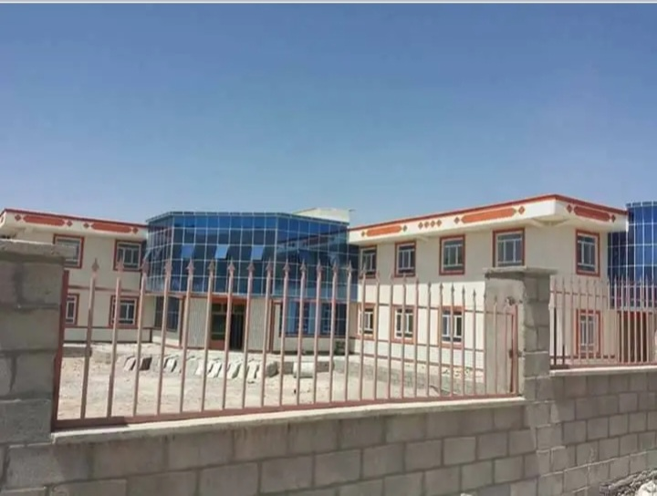
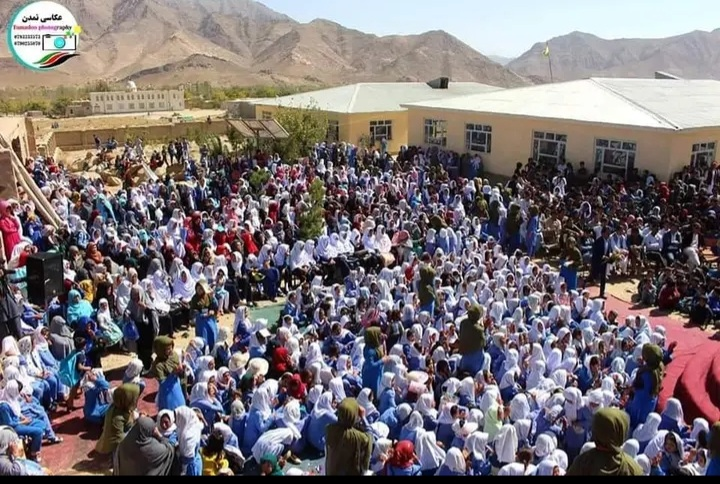
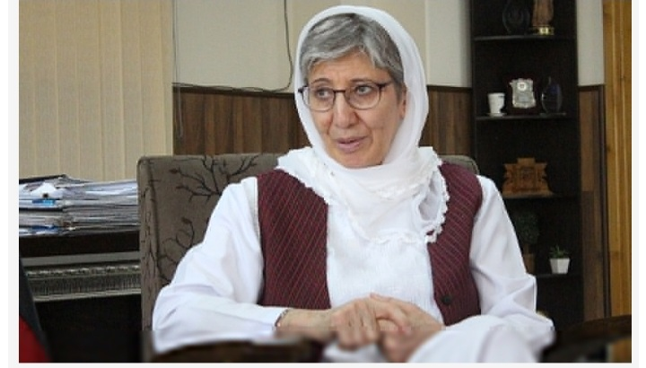
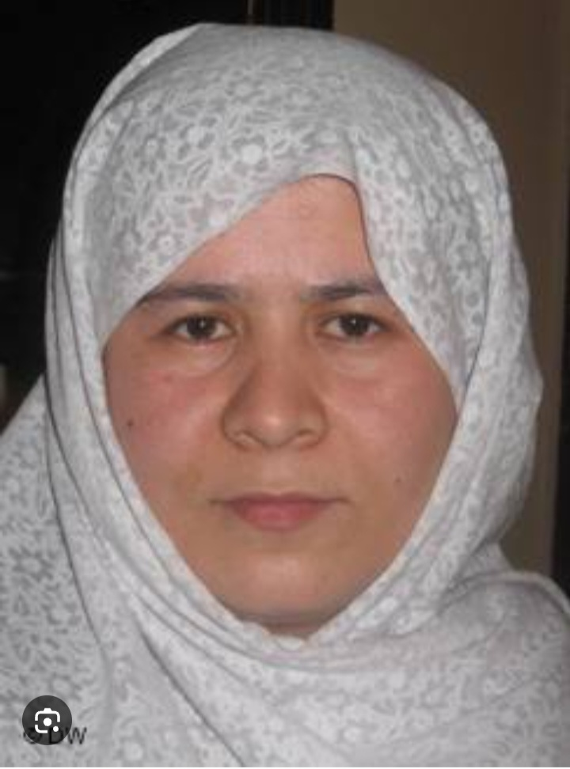
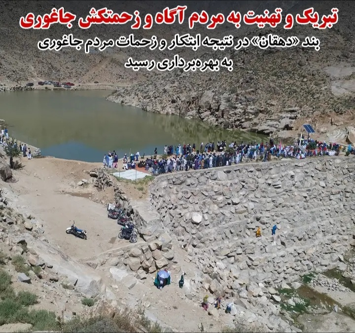
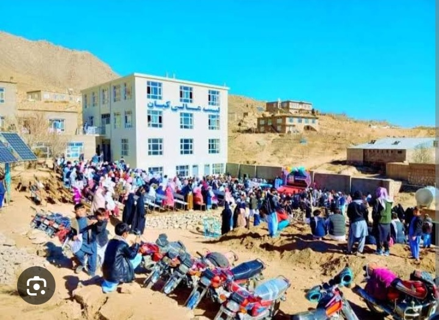
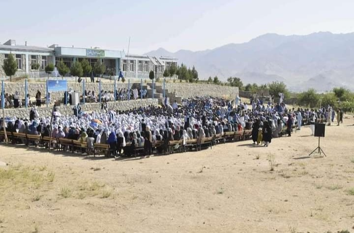
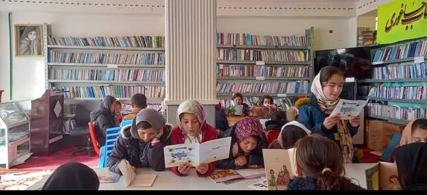
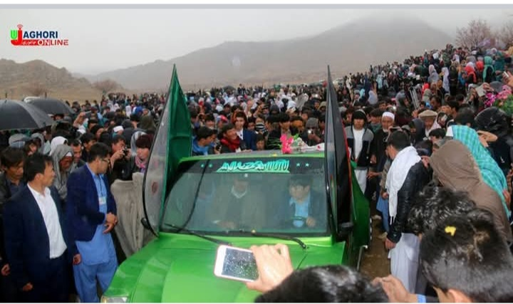
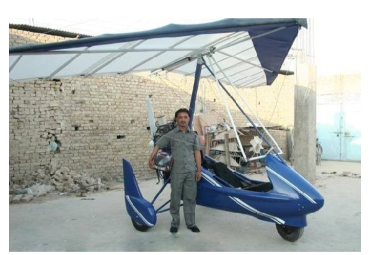

دانشگاهها و مکاتب جاغوری


توضیحات جامع در مورد دانشگاهها و مکاتب جاغوری...
شخصیتهای علمی جاغوری


بررسی شخصیتهای برجسته علمی جاغوری...
دستاوردهای علمی جاغوری


دستاوردهای علمی برجسته و تحقیقات جاغوری...
دروس و منابع آموزشی


منابع آموزشی و دروس در سطح جاغوری...
تکنولوژی و نوآوری


نقش تکنولوژی و نوآوری در جاغوری...